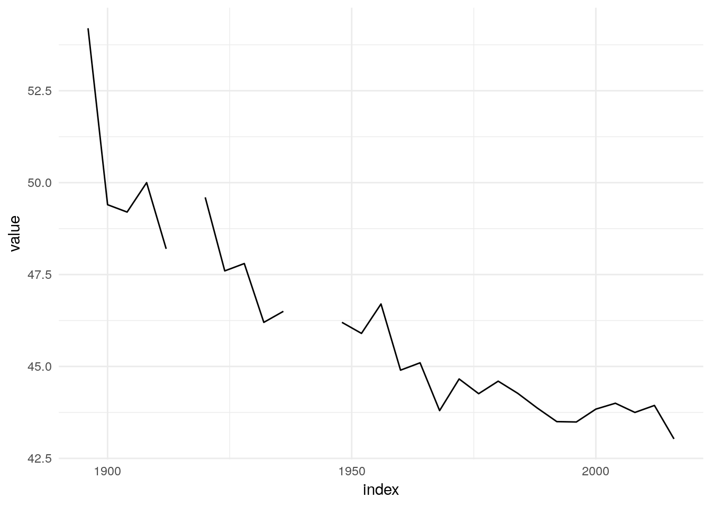
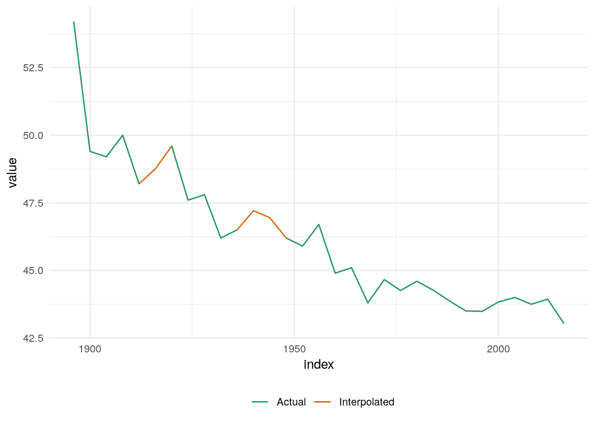
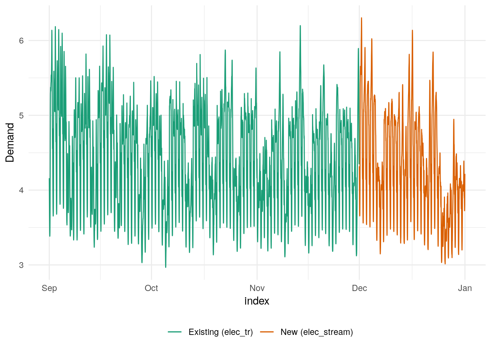
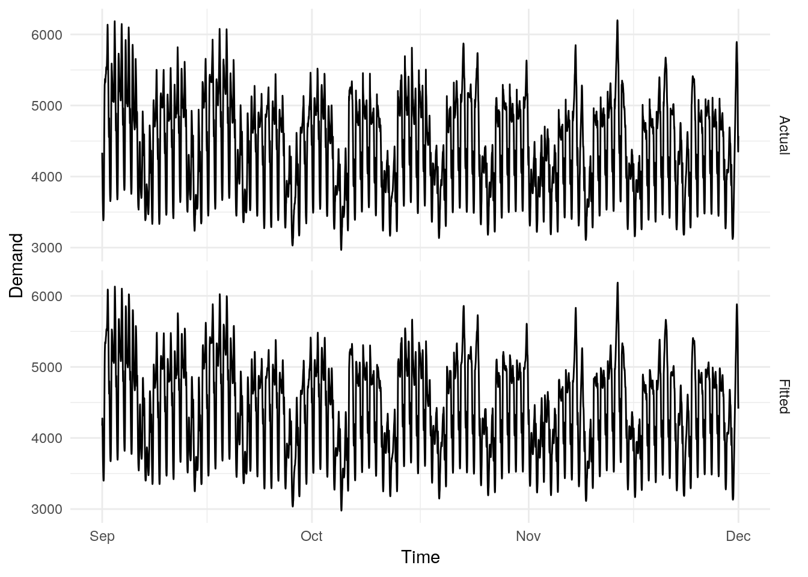
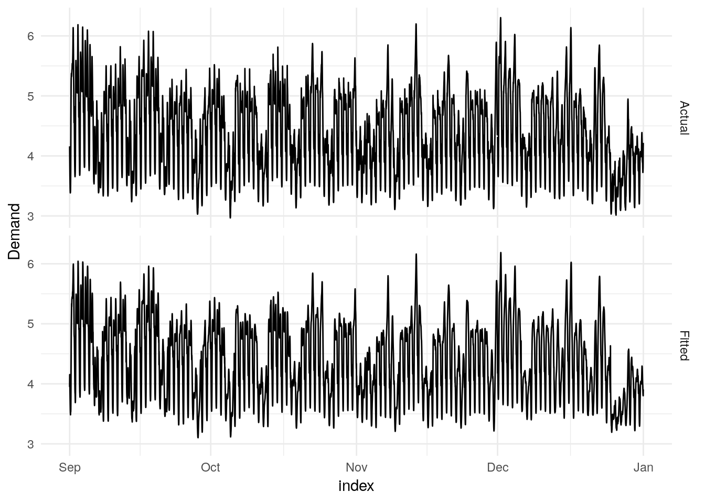
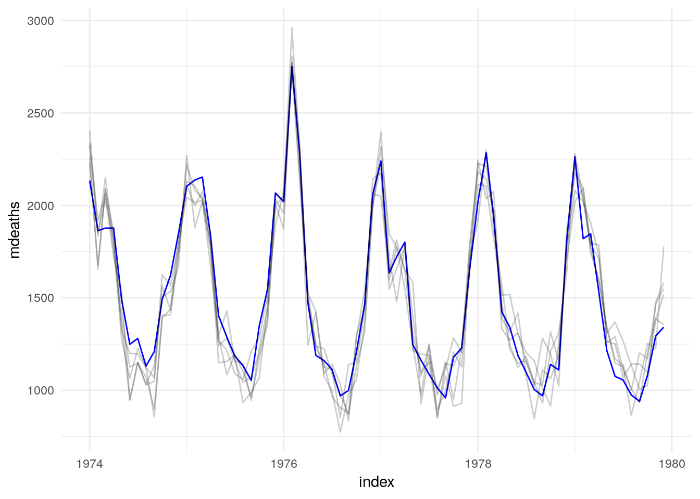
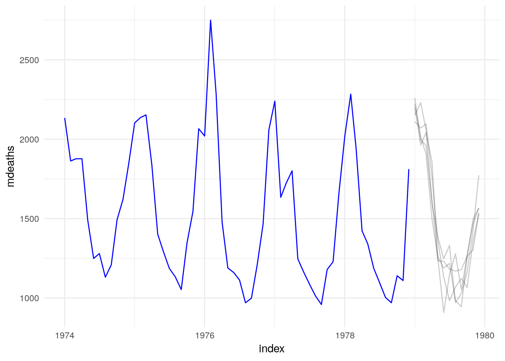

5 Model methods
5.1 Interpolation
Models that can be estimated in the presence of missing values can often be used to interpolate the unknown values. Often interpolated values can be taken from model’s fitted values, and some models may support more sophisticated interpolation methods.
The forecast package provides the na.interp function for interpolating time series data, which uses linear interpolation for non-seasonal data, and STL decomposition for seasonal data.
Tidy time series tools should allow users to interpolate missing values using any appropriate model.
For example, the tsibbledata::olympic_running dataset contains Olympic men’s 400m track final winning times. The winning times for the 1916, 1940 and 1944 Olympics are missing from the dataset due to the World Wars.
## Warning: Removed 31 rows containing missing values (geom_point).
We could then interpolate these missing values using the fitted values from a linear model with a trend:
olympic_running %>%
model(lm = TSLM(Time ~ trend())) %>%
interpolate(olympic_running)## # A tsibble: 312 x 4 [4Y]
## # Key: Length, Sex [14]
## Length Sex Year Time
## <fct> <chr> <dbl> <dbl>
## 1 100m men 1896 12
## 2 100m men 1900 11
## 3 100m men 1904 11
## 4 100m men 1908 10.8
## 5 100m men 1912 10.8
## 6 100m men 1916 10.8
## 7 100m men 1920 10.8
## 8 100m men 1924 10.6
## 9 100m men 1928 10.8
## 10 100m men 1932 10.3
## # … with 302 more rows## Warning: Removed 31 rows containing missing values (geom_point).
5.2 Re-estimation
https://github.com/tidyverts/fable/issues/43
5.2.1 refit()
The refitting a model allows the same model to be applied to a new dataset. This is similar to the model argument available in most modelling functions from the forecast package.
The refitted model should maintain the same structure and coefficients of the original model, with fitted information updated to reflect the model’s behaviour on the new dataset. It should also be possible to allow re-estimation of parameters using the reestimate argument, which keeps the selected model terms but updates the model coefficients/parameters.
It is expected that a refit method uses a fitted model and replacement data to return a mable.
For the ETS model for mdeaths estimated above:
library(fable)
ets_fit <- as_tsibble(mdeaths) %>%
model(ETS(value))We may be interested in using the same model with the same coefficients to estimate the fdeaths series:
refit(ets_fit, as_tsibble(fdeaths))## # A mable: 1 x 1
## `ETS(value)`
## <model>
## 1 <ETS(M,A,A)>5.2.2 stream()
Streaming data into a model allows a model to be extended to accomodate new, future data. Like refit, stream should allow re-estimation of the model parameters. As this can be a costly operation for some models, in most cases updating the parameters should not occur. However it is recommended that the model parameters are updated on a regular basis.
Suppose we are estimating electricity demand data (tsibbledata::aus_elec), and after fitting a model to the existing data, a new set of data from the next month becomes available.
##
## Attaching package: 'lubridate'## The following object is masked from 'package:base':
##
## date
A (minimal) model for the electricity demand above can be estimated using fasster.
fit <- elec_tr %>%
model(fasster = fasster(Demand ~ Holiday %S% (poly(1) + trig(10))))
To extend these fitted values to include December’s electricity data, we can use the stream functionality:
fit <- fit %>%
stream(elec_stream)
5.3 Simulation
Much like the tidymodels opinion toward predict, generate should not default to an archived version of the training set. This allows models to be used for simulating new data sets, which is especially relevant for time series as often future paths beyond the training set are simulated.
The generate method for a fable model should accept these arguments (names chosen for consistency with tidymodels):
- object: The model itself
- new_data: The data used for simulation
times: The number of simulated series (handled by fablelite)seed: Random generator initialisation (handled by fablelite)
The new_data dataset extends existing stats::simulate functionality by allowing the simulation to accept a new time index for simulating beyond the sample (.idx), and allows the simulation to work with a new set of exogenous regressors (say x1 and x2).
It is expected that the innovations (.innov) for the simulation are randomly generated for each repition number (rep), which can be achieved using the times argument. However, users should also be able to provide a set of pre-generated innovations (.innov) for each repition (.rep). If these columns are provided in the new_data, then this data will be passed directly to the simulation method (without generating new numbers over times replications).
## Warning: `id()` is deprecated for creating key.
## Please use `key = .rep`.## # A tsibble: 9 x 5 [1M]
## # Key: .rep [3]
## .rep .idx .innov x1 x2
## <int> <mth> <dbl> <dbl> <dbl>
## 1 1 2017 Jan 0.398 2.93 -1.08
## 2 1 2017 Feb -1.40 1.42 0.347
## 3 1 2017 Mar -0.513 1.27 -1.02
## 4 2 2017 Jan 0.584 6.88 -2.96
## 5 2 2017 Feb -0.655 0.627 -1.65
## 6 2 2017 Mar 0.870 4.56 -1.23
## 7 3 2017 Jan -0.889 -0.0771 -2.42
## 8 3 2017 Feb -1.56 1.78 -2.48
## 9 3 2017 Mar 0.508 0.556 -3.23For the end user, creating simulations would work like this:
library(fable)
library(tsibbledata)
UKLungDeaths %>%
model(lm = TSLM(mdeaths ~ fourier("year", K = 4) + fdeaths)) %>%
generate(UKLungDeaths, times = 5)## # A tsibble: 360 x 4 [1M]
## # Key: .rep, .model [5]
## .model .rep index .sim
## <chr> <int> <mth> <dbl>
## 1 lm 1 1974 Jan 2260.
## 2 lm 1 1974 Feb 1655.
## 3 lm 1 1974 Mar 2091.
## 4 lm 1 1974 Apr 1762.
## 5 lm 1 1974 May 1360.
## 6 lm 1 1974 Jun 950.
## 7 lm 1 1974 Jul 1153.
## 8 lm 1 1974 Aug 1031.
## 9 lm 1 1974 Sep 1133.
## 10 lm 1 1974 Oct 1506.
## # … with 350 more rows
Or, to generate data beyond the sample:
library(lubridate)
UKLungDeaths %>%
filter(year(index) <= 1978) %>%
model(lm = TSLM(mdeaths ~ fourier("year", K = 4) + fdeaths)) %>%
generate(
UKLungDeaths %>% filter(year(index) > 1978),
times = 5
)## # A tsibble: 60 x 4 [1M]
## # Key: .rep, .model [5]
## .model .rep index .sim
## <chr> <int> <mth> <dbl>
## 1 lm 1 1979 Jan 2047.
## 2 lm 1 1979 Feb 1875.
## 3 lm 1 1979 Mar 1723.
## 4 lm 1 1979 Apr 1685.
## 5 lm 1 1979 May 1374.
## 6 lm 1 1979 Jun 1105.
## 7 lm 1 1979 Jul 1260.
## 8 lm 1 1979 Aug 1115.
## 9 lm 1 1979 Sep 1020.
## 10 lm 1 1979 Oct 1173.
## # … with 50 more rows
5.4 Visualisation
Different plots are appropriate for visualising each type of model. For example, a plot of an ARIMA model may show the AR and/or MA roots from the model on a unit circle. A linear model has several common plots, including plots showing “Residuals vs Fitted” values, normality via a Q-Q plot, and measures of leverage. These model plots are further extended by the visreg package to show the affects of terms on the model’s response. Some models currently have no model-specific plots, such as ETS, which defaults to showing a components plot using the estimated states.
Visualising these models poses a substantial challenge for consistency across models, and is made more difficult as batch modelling becomes commonplace.